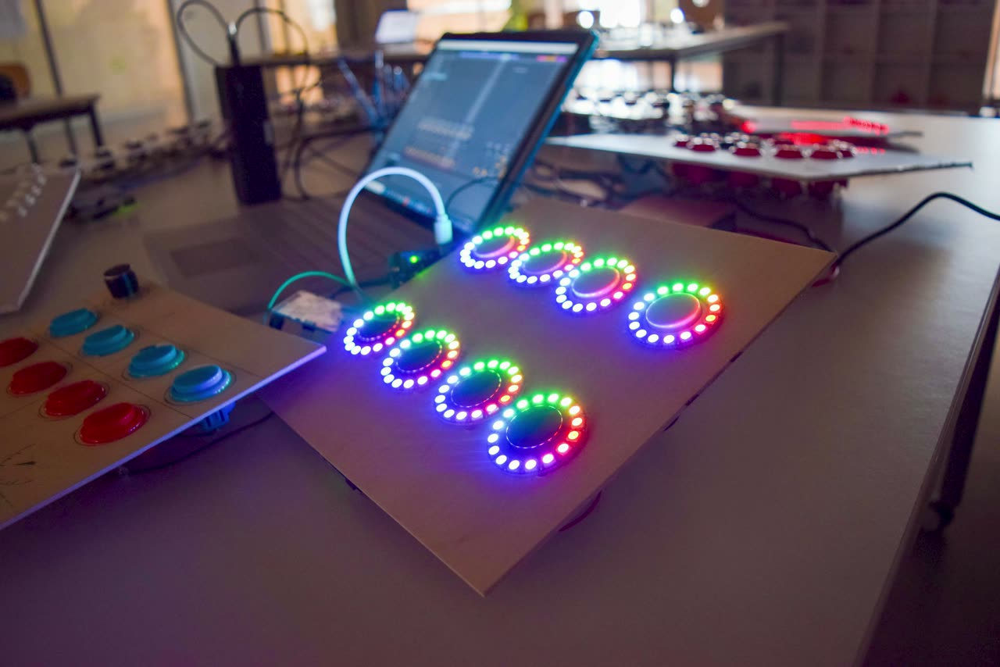

A Music Makerspace Course Development, Implementation, and Reflection
A Music Makerspace Course Development, Implementation, and Reflection
1. PubPub Link
https://nime.pubpub.org/pub/wo6obmuy/draft?access=yijygz8x
2.Conference Abstraction
A detailed documentation of processes taken from inception to implementation through reflection of a Music Makerspace course where students design, code, build, and perform on MIDI controllers of their own design. A special focus to transparency of process was given while constructing the course with the goal of continuing development into a refined platform for creative education using, music, technology, art & sculpture, and performance. The process follows the narrative from the point of view of a music educator who seeks to reinvent the role of music education within schools through critique of the established norms, practices, and expectations while framing the direction of reinvention around relevancy, making, and creative expression.
3.Requirements (optional, especially for the performance on-site)
* This section does not need to be filled out for each item; if your work involves relevant items, please fill out the appropriate section. If you will be presenting performance on-site, each section needs to be filled out in detail.
The vision for this on-site showcase is a display of information, artifacts, and documentation of the process with running audio/video commentary.
- equipment:
Television screen for displaying slideshow with pictures/video
Speaker for audio playback from computer (3.5mm, RCA, or 1/4in inputs are okay)
Table for laying out artifacts, documentation, and support for poster
power strip for laptop plugin
- space: Would be ideal in a public university space, outside performance venues or in conference common area.
- performer(s): Non-Applicable
- feasibility: Similar showcases have been put on for university lectures, gallery showcases, and at APME conference.
4.Program Description
- How can we better support creative construction & expression in a K-12 learning environment? A “creative” music education that balances construction, technology, invention, and performance in a part-makerspace part-studio environment. A Music Ed derived DIY electronic instrument maker course for students that has finished
5.Media

▶6. ACKNOWLEDGEMENTS
The author would like to thank Whittle School & Studios-Shenzhen, the staff of Thingspace Makerspace at Teachers College, and everyone who served as a source of inspiration or encouragement.